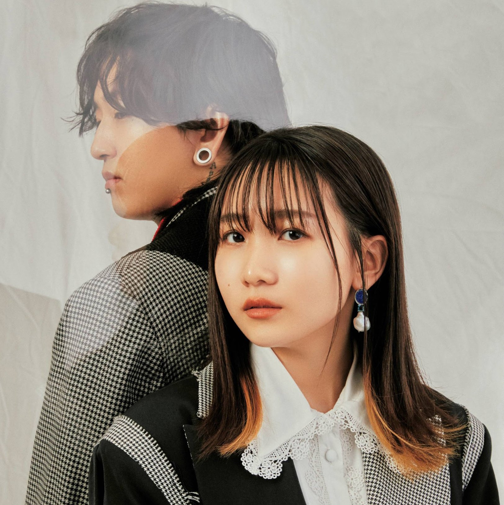
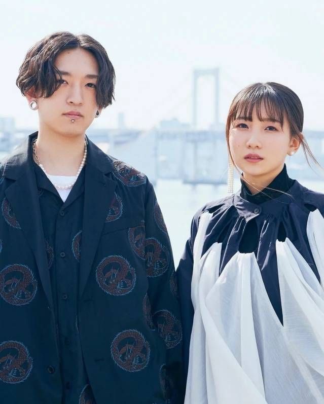

PROFILE
YOASOBI
 "A unit that turns novels into music" consisting of composer Ayase and vocalist ikura. The first song "Yoru ni Kakeru" released in November 2019 won the 1st place in 2020 on the Billboard Japan general song chart "HOT 100", and in December 2021, the first ever streaming total of 700 million times. Break through playback. The second song "Trace that dream" is a comicalized version of the original novel, and the third song "Harujion" is a collaboration with beverages and video works. Ultramarine" is released. In December, Osamu Suzuki announced the song "Haruka" based on the original novel. The first CD "THE BOOK" will be released on January 6, 2021. The luxurious specifications have attracted a lot of attention, and while recording the second place in the Oricon daily ranking for the first time, all songs are distributed.Achieved the feat of simultaneously ranking within the top 15 on the Apple Music streaming chart. The TV anime "BEASTARS" OP theme "Kaibutsu" and ED theme "Yasashii Comet", which were released in quick succession, also won first place on various charts. In February, the first one-man live "KEEP OUT THEATER" was held at the construction site of the former Milan Theater in Shinjuku. In May, "Much more" was released, and in the Billboard Japan chart for the first half of 2021 announced in June, he won the first place in the artist ranking "Billboard JAPAN TOP Artists". With that momentum, in July they released "Sangenshoku", which was used as the CM song for NTT Docomo's "ahamo". In the same month, a collaboration live with UNIQLO "UT""SING YOUR WORLD" was held at UNIQLO Ariake Headquarters, UNIQLO CITY TOKYO, and was live-streamed on YouTube with a record of 280,000 simultaneous connections. In August, "Love Letter" based on a letter from elementary school students, in September "Taisho Roman" released at the same time as the original novel, and in October, NHK children's SDGs program series "Expand! Irotoridori" theme song. Announced the newly written "Tsubame". In December, they released their 2nd EP "THE BOOK 2", which includes all the songs released that year, and their first audience live at Nippon Budokan was also a great success. From February 2022, four Naoki Prize writers, Rio Shimamoto, Mitsuki Tsujimura, Miyuki Miyabe, and Eto Mori, will start the project "Hajimete no", in which they will write original novels and release songs in sequence. He has expanded his range of activities to various forms of expression such as music, novels, and videos.

Ayase
VOCALOID producer / YOASOBI composer
Born April 4, 1994, from Yamaguchi Prefecture. Started posting VOCALOID songs in December 2018. The song "Last Resort", released in April 2019, has been played over 13 million times on YouTube. The first EP "Ghost Tokyo" released in November 2019 was completed immediately. He also has a reputation for his self-covering of Vocaloid songs, with "Ghost Tokyo" surpassing 19 million views and "Yoraseru Menou" surpassing 22 million views. In addition to his activities as a composer for Vocaloid P and YOASOBI, he also provides music to various artists.

Ikura
Singer - Songwriter / YOASOBI vocal
Born September 25, 2000, from Tokyo. Acting as a singer-songwriter “Rira Ikuta”, “Answer”, which was released in March 2021, was used as the commercial song for Tokio Marine & Nichido Life Insurance’s “Anshin Unemployment Insurance”. In Mamoru Hosoda's movie "Dragon and Freckles Princess", which was released on July 16, she played the role of the main character Suzu's best friend for the first time as a voice actor.
YOASOBI PROFILE Website